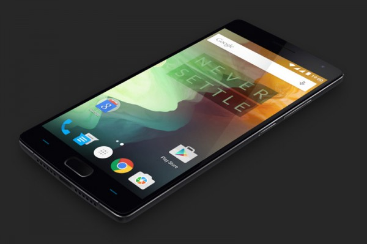
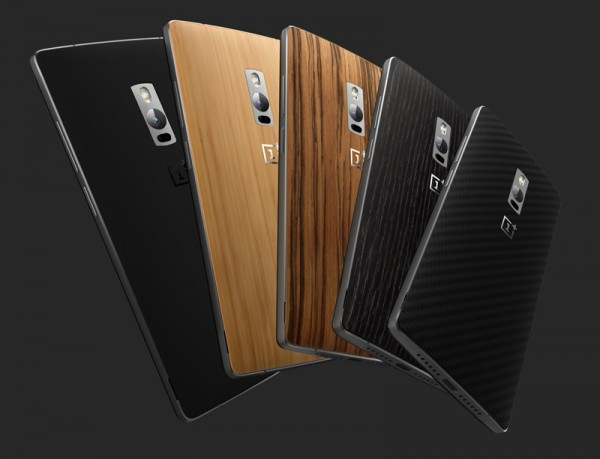
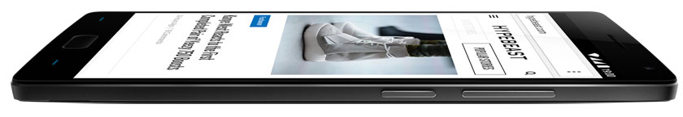
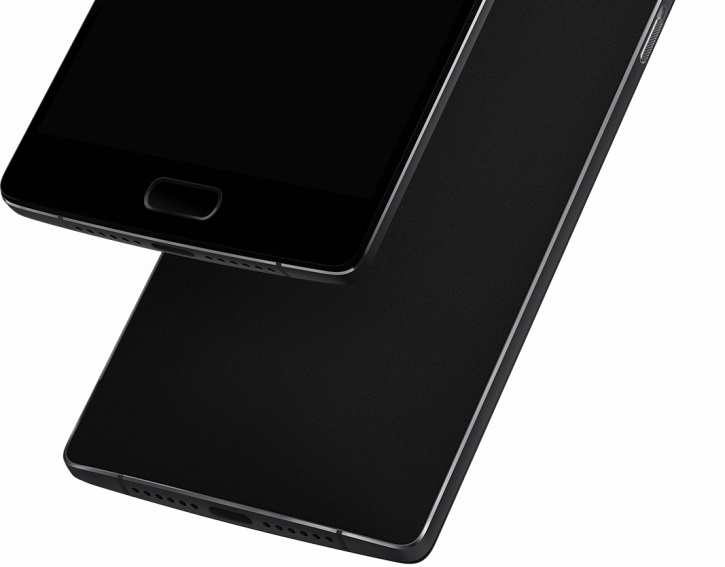

Компания OnePlus показала новый 64-битный телефон OnePlus 2
Телефон второго поколения от OnePlus выйдет уже в августе.
В новинке применен мощный процессор Snapdragon 810, причем речь идет об улучшенной версии чипа с индексом v2.1. Изделие содержит четыре 64-битных ядра ARM Cortex-A57 и четыре энергоэффективных ядра Cortex-A53. Тактовая частота достигает 1,8 ГГц. Обработкой графики занят контроллер Adreno 430 с поддержкой 4K-разрешений и OpenGL ES 3.1. OnePlus уверяет, что будущие владельцы смартфона не столкнутся с проблемой перегрева процессора.
Смартфон будет доступен в двух версиях. Младшая наделена 3 Гбайт оперативной памяти LPDDR4 RAM и флеш-модулем вместимостью 16 Гбайт. Более мощная модификация несет на борту 4 Гбайт ОЗУ, а накопитель рассчитан на хранение 64 Гбайт информации.
Как и оригинальный аппарат, смартфон OnePlus 2 наделён 5,5-дюймовым сенсорным дисплеем формата Full HD (1920×1080 точек). При этом панель характеризуется повышенной яркостью и улучшенной цветопередачей.
В оснащение входят две камеры. Основная располагает 13-мегапиксельной матрицей, лазерным автофокусом и системой оптической стабилизации изображения. Для видеотелефонии и съёмки автопортретов имеется фронтальная камера с 5-мегапиксельным сенсором.
Аппарат оборудован передовым дактилоскопическим датчиком для идентификации пользователей по отпечаткам пальцев. Скорость сканирования, как утверждается, выше по сравнению с iPhone. В памяти смартфона можно сохранить до пяти отпечатков.
Ещё одна особенность новинки — наличие симметричного порта USB Type-C. Это означает возможность подключения кабелей любой стороной. Кроме того, USB Type-C входит в спецификацию USB 3.1, что говорит о пропускной способности до 10 Гбит/с.
Прочие характеристики OnePlus 2 таковы: двухдиапазонный адаптер беспроводной связи Wi-Fi 802.11ac, контроллер Bluetooth 4.1, акселерометр, гироскоп, датчики приближения и освещённости. Питание обеспечивает аккумуляторная батарея ёмкостью 3300 мА·ч. Габариты составляют 151,8 × 74,9 × 9,85 мм, вес — 175 граммов.
На смартфон инсталлирована операционная система OxygenOS на основе Android 5.1.
Поддерживается работа в сетях GSM, WCDMA и LTE; предусмотрено два слота для карт nanoSIM.
11 августа в продажу поступит версия OnePlus 2 с флеш-модулем на 64 Гбайт: цена аппарата составит $390. Модель с 16 Гбайт памяти станет доступна позднее по цене в $330.